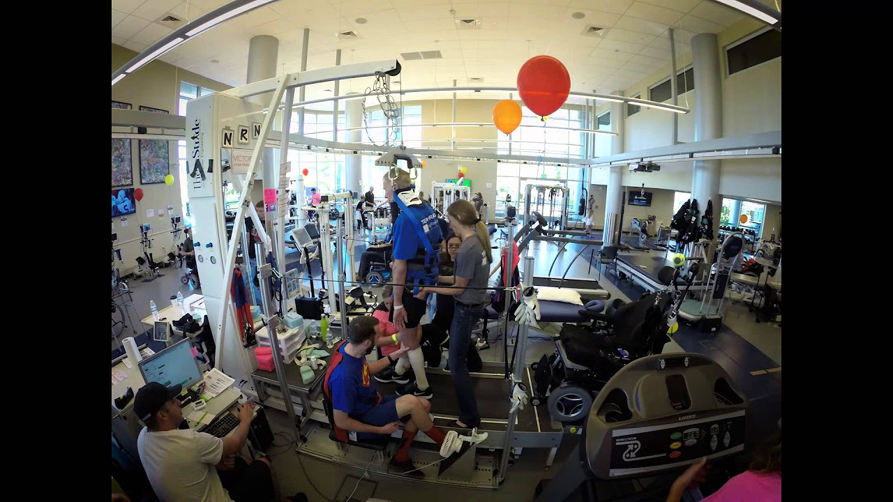

About Me
Hello, my name is Brad Efting. From an early age, I have loved business. When I was a teenager, I started a small lawn mowing business and after studying business in college, I started an auto body business. Starting my own ventures at a young age was an amazing learning experience but after three years of having the auto body shop, I decided to close the business and to move to Colorado. When I arrived in Colorado, I decided to finish my bachelor's degree at Colorado State University. While completing my degree, I also became the marketing manager at a Boulder-based publishing company. One of my responsibilities as marketing manager was maintaining the company's e-commerce website. When I made changes to the website, I enjoyed solving different problems using code as if each problem was a puzzle. Discovering the joy of coding and knowing my passion for business brought me to the Galvanize full stack program. Although this immersive program is intense and fast-paced, I have thoroughly enjoyed it because we get to have fun building cool applications while learning our trade. I'm excited for the adventure that lays ahead of me following graduation from the program.
About my capstone project
In addition to maintaining the website at my previous job, I also maintained the company's social media sites. I remember making note that a lot of the messages we received from friends/followers, were repeat questions. With this in mind, I decided to build a bot that could provide responses to customer inquiries almost instantaneously.
While brainstorming for ideas about what problem the bot would solve, my wife said that she would like a bot that could filter applicants to a program at her brain and spinal cord injury hospital. I thought her idea was intriguing so theraBot will be a spinal cord injury bot designed to pre-qualify users for the NeuroRecovery Network (NRN) program.
Some of the qualifying questions that the Bot will ask users are:
- Are you at least 16 years old?
- Is your injury considered complete or incomplete?
- Is your injury at the cervical level?
- Do you preform any regular standing?
If the user's responses meet the requirements; the user is asked for their contact information so someone at the hospital can interview them further. If the user's responses don't meet the criteria, the bot tells the user that they aren't currently a good fit but they could be in the future so try again.
By using Microsoft's Bot Framework, I was able to leverage the exact same code from theraBot's website in Facebook Messenger to allow the bot to answer the same questions on Facebook. In addition, by leveraging the Azure platform to both host my code and register theraBot, the bot could easily be compliant with Health Insurance Portability and Accountability, HIPAA, regulations. I hope to work with a real hospital to implement this time saving customer service bot and if that occurs we would collaborate to ensure HIPAA compliance.

Here is a NRN team in action. The patient is walking on the treadmill with assistance from physical therapists.
Technologies used on capstone include:
- Facebook Messenger
- Microsoft Bot Framework
- Azure App Services
- Bootstrap
- NodeJS
- jQuery
- Web Speech API (stretch)